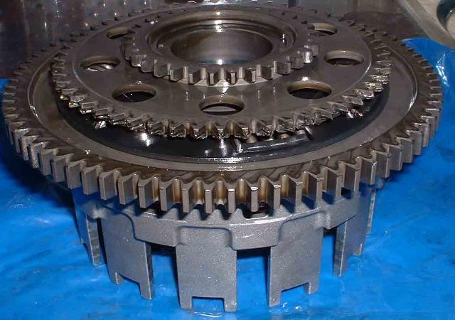
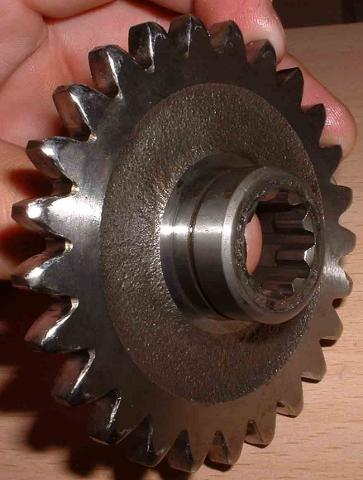
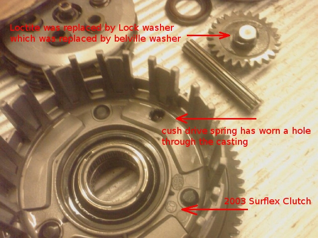
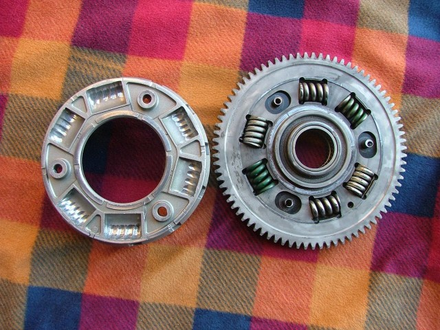
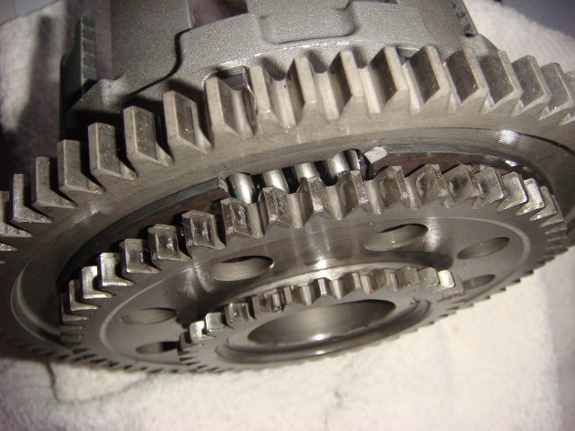

The Symptom
This one is nasty. It happened to dean100yz, from the Benelliforum. He posted the following on the 26 April 2006. If the right side of the engine starts to rattle more than usual - STOP. You'll be glad you did.
Hey all. I've been clocking up some miles recently and have noticed something. When I start the bike up from cold the right side (assuming the clutch basket) rattles or at least I think thats what it is. I can only describe it as the sound of a duc dry clutch, only not as loud. Once it warms up the noise goes a bit and theres been no loss in power, surges or funny clutch action. However, speaking to a local Benelli dealer, they said its probably the clutch basket and they're prone for going. Has anyone else suffered a problem like this or has similar symptoms?? I'm a little worried on riding until I know for sure, but I've booked to go Isle of Man in June and Silverstone end of May :\
Ah seems the problem was a little worse than I first thought. Something to do with the clutch. Was stuck 70 miles from home today...oh the joy. Still my fault should have had it checked.
I've stripped her of all her clothes today including sump, clutch cover etc. The sump plug is magnetic and
picked up a good majority of the damaged parts - it was full of metal and swarf.
If anyone develops a loud rattling right side get it repaired - it'll last about 1000 miles tops.
There are a few other symptoms as well as the rattling. The bike was struggling to engage 1st when in neutral. Also
the bike can lurch forward even when the clutch is in. I didn't get these, but after speaking to a Benelli guru he
said they can also happen.
I'm 90% through what bits I think broke on the bike. I'm finishing it off tonight. So far the main bit was on pg 155/6 of the workshop manual, section 5.8.7/8 I think its called the primary clutch bell unit. There's 3 gears running on the inside of this (the other side holds the clutch plates). The centre gear has ripped itself to pieces - dean100yz
The Cause
This is not actually, a clutch fault. It is caused by the M10 x 1.25 x 25 bolt at the end of the alternator drive shaft coming loose. This bolt holds the alternator drive dog in place, which in turn keeps the shaft and Z25 gear from floating towards the clutch primary gear. If it is allowed to move too far, the Z25 & intermediate gears will not engage sufficiently, and the intermediate gear teeth will wear away, as you can see by the picture below. The Z25 (Control) gear will also suffer as a result. (see pic below)
The Solution
Benelli originally Loctited the M10 bolt in place, but thermal cycling weakend the bond, allowing the bolt to
unscrew.
They then produced a rather special lock washer to hold the M10 bolt in place. You can see this in the sepia toned
picture, 3 pics below. Unfortunately, thermal cycling could also break the tabs off this washer, allowing the M10
bolt to unscrew
Around 2007 / 8, the factory replaced the lock washer, with a belville washer - at least on the TNT. A belville
washer is able to retain pressure on the M10 bolt, despite thermal dimension changes, and this has been a
successful solution.
|  |  |
| Primary Clutch Bell Unit - Workshop Manual, Sect 5.8.8, pg.156 | Z25 Gear (W/M, Sect 5.8.9, pg.157 (item 5)) |
Suffice to say, you don't want this to happen, so do something! If your frame number is 297 or lower, check it.
All the early Tornado's (up to frame 297) that came to Australia were supposed to have the lock washer fitted to the alternator coupling retaining bolt, by the selling dealer. Lock washer kits were sent to all of the dealers. Frame numbers above 297 should have been delivered with the lock washer installed at the factory, but it's worth checking it, just for peace of mind.
The OTHER Clutch basket problems
|  |  |
| Spring Has Worn a Hole Clear Through the Casting | Colin's 2003 Clutch had excessive rotational slack, creating a lot of noise |
|  | |
| Laurence's "ebay" Engine Had Cush Drive Problems (2003, or earlier, clutch) |
How can you tell if you have the upgraded clutch basket?
JohnnyO says, that:-
- it has the letter 'J' stamped on the middle gear.
- the old thin gear is 6mm wide, the new improved clutch basket has an 8mm wide gear fitted.
If you need to get one, it has the same part number as the old one.